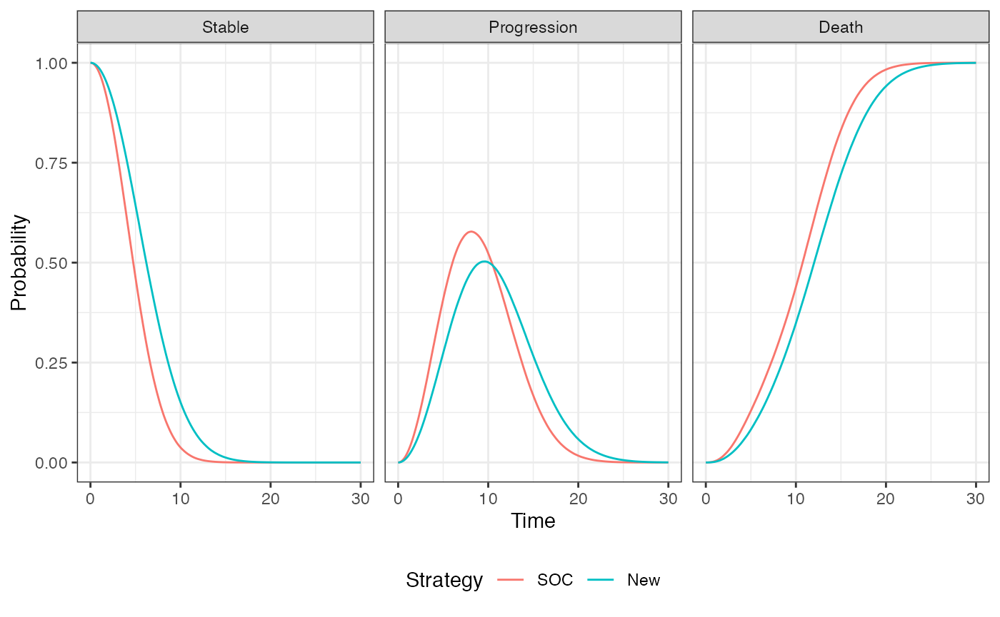
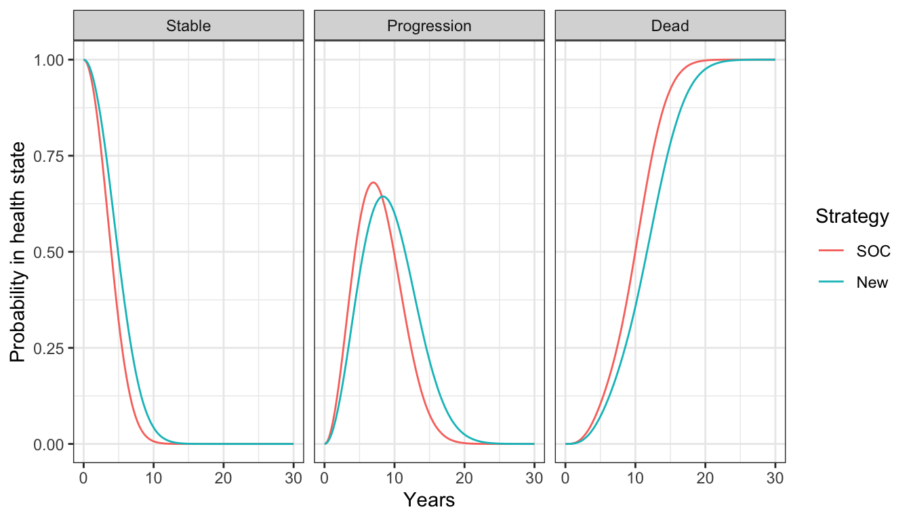

Overview
In this tutorial we use a continuous time state transition model (CTSTM) and relax many of the assumptions made in cohort discrete time state transition models (DTSTMs). First, since the model is in continuous time we do not require model cycles. Second, we estimate the parameters of the health state transitions using a multi-state model so that the simulation model is completely integrated with an underlying statistical model. Third, we use individual patient simulation (IPS) to simulate a semi-Markov model, meaning that (unlike in a Markov model) transitions cannot depend on prior history.
To illustrate, we simplify the sick-sicker model so that it only contains three health states and modify the states—Stable, Progression, and Dead—to mimic an oncology application where patients transition from stable disease to progression to death. There are three transitions: (1) Stable to Progression, (2) Stable to Dead, and (3) Progression to Dead.

The following packages and settings will be used for the analysis. Note that while individual-level simulations can be computationally intensive, they run very quickly in hesim because they are implemented fully in C++ under the hood. You can learn more by looking at the hesim multi-state modeling vignette.
Background
Multi-state models are generalizations of survival models to more than 2 states that estimate hazard functions for each possible transition. Flexible survival models can be used for each transition ensuring that the rates at which patients transition between states are consistent with the available data.
Different assumptions can be made about the time scales used to determine the hazards. In a clock forward (i.e., Markov) model, transition hazards depends on time since entering the initial health state. Conversely, in a clock reset (i.e., semi-Markov) model, the hazards are a function of time since entering the current state (i.e., time resets to 0 each time a patient enters a new state).
Importantly, state occupancy probabilities in clock-reset models can only be simulated in a general fashion using IPS (although tunnel states can be used in a cohort model to approximate a semi-Markov process). In an IPS multiple patients are simulated and the expected value of outcomes is computed by averaging across patients. It is important to simulate enough patients so that the expected values are stable and not subject to significant Monte Carlo error.
We suggest the tutorial by Putter et al. for additional details on multi-state modeling.
Model setup
The transitions of a multi-state model in hesim must be characterized by a matrix where each element denotes a transition from a row to a column. If a transition is not possible it is marked with NA; otherwise, an integer denotes the transition number.
tmat <- rbind(
c(NA, 1, 2),
c(NA, NA, 3),
c(NA, NA, NA)
)
colnames(tmat) <- rownames(tmat) <- c("Stable", "Progression", "Dead")
print(tmat)## Stable Progression Dead
## Stable NA 1 2
## Progression NA NA 3
## Dead NA NA NAAs in the cohort model, we must specify the target population and treatment strategies of interest. Unlike the cohort model we simulate 1,000 patients which should be enough to produce reasonably stable results. We also explicitly define the health states, which we will use to model utility and costs.
n_patients <- 1000
patients <- data.table(
patient_id = 1:n_patients,
age = rnorm(n_patients, mean = 45, sd = 7),
female = rbinom(n_patients, size = 1, prob = .51)
)
states <- data.table(
state_id = c(1, 2),
state_name = c("Stable", "Progression") # Non-death health states
)
n_states <- nrow(states)
strategies <- data.frame(
strategy_id = 1:2,
strategy_name = c("SOC", "New")
)
n_strategies <- nrow(strategies)
hesim_dat <- hesim_data(
strategies = strategies,
patients = patients,
states = states
)
print(hesim_dat)## $strategies
## strategy_id strategy_name
## 1 1 SOC
## 2 2 New
##
## $patients
## patient_id age female
## 1: 1 42.71774 0
## 2: 2 48.86723 0
## 3: 3 40.27539 1
## 4: 4 46.50052 1
## 5: 5 47.17538 1
## ---
## 996: 996 43.22279 0
## 997: 997 54.22166 0
## 998: 998 37.27172 0
## 999: 999 45.20616 0
## 1000: 1000 39.15981 1
##
## $states
## state_id state_name
## 1: 1 Stable
## 2: 2 Progression
##
## attr(,"class")
## [1] "hesim_data"hesim also provides a convenient function, get_labels(), for assigning labels to all the ID variables in order to facilitate nicer presentation of results.
labs <- get_labels(hesim_dat)Parameter estimation
In the cohort examples, we used parameter estimates derived from external sources. An alternative approach is to estimate the parameters directly with R. We will take that approach here for the multi-state model and estimate the transition specific hazards using flexsurv. Conversely, we will continue to use mean values for utility and costs.
Multi-state model
Multi-state data consists of one row for each possible transition from a given health state where only one transition is observed and all others are censored. We use the dataset, onc3, which contains simulated data for a stable-progression-death model. To maintain consistency with our prior examples, we restrict the analysis to two treatment strategies, SOC and New.
data <- hesim::onc3[strategy_name != "New 1"]
data[, strategy_name := droplevels(strategy_name)]
levels(data$strategy_name) <- c("SOC", "New")
data[patient_id %in% c(1, 2)]## from to strategy_name female age patient_id time_start
## 1: Stable Progression New 0 59.85813 1 0.000000
## 2: Stable Death New 0 59.85813 1 0.000000
## 3: Progression Death New 0 59.85813 1 2.420226
## 4: Stable Progression New 0 62.57282 2 0.000000
## 5: Stable Death New 0 62.57282 2 0.000000
## time_stop status transition_id strategy_id time
## 1: 2.420226 1 1 3 2.420226
## 2: 2.420226 0 2 3 2.420226
## 3: 14.620258 1 3 3 12.200032
## 4: 7.497464 0 1 3 7.497464
## 5: 7.497464 0 2 3 7.497464Multi-state models can be fit by estimating a joint survival model with interaction terms for different transition (see the hesim introductory vignette for more details) or by fitting separate survival models for each transition. We will take the latter approach and and fit 3 parametric Weibull models. (Note that in an applied example you should compare the performance of multiple distributions. Type ?params_surv to view the survival distributions supported by hesim.)
n_trans <- max(tmat, na.rm = TRUE) # Number of transitions
wei_fits <- vector(length = n_trans, mode = "list")
for (i in 1:length(wei_fits)){
wei_fits[[i]] <- flexsurvreg(
Surv(time, status) ~ strategy_name + female,
data = data,
subset = (transition_id == i) ,
dist = "weibull")
}
wei_fits <- flexsurvreg_list(wei_fits)Utility and costs
In the cohort model, we assigned utility and cost values to health states using hesim::define_tparams() within the hesim::define_model() framework. An alternative (and more direct) approach is to use a hesim::stateval_tbl. We will continue to assume that the utility associated with each state follows a beta distribution.
utility_tbl <- stateval_tbl(
data.table(state_id = states$state_id,
mean = c(.8, .6),
se = c(0.02, .05)
),
dist = "beta"
)
print(utility_tbl)## state_id mean se
## 1: 1 0.8 0.02
## 2: 2 0.6 0.05Similarly, we continue to assume that medical costs vary by health state and follow a gamma distribution.
medcost_tbl <- stateval_tbl(
data.table(state_id = states$state_id,
mean = c(2000, 9500),
se = c(2000, 9500)
),
dist = "gamma"
)
print(medcost_tbl)## state_id mean se
## 1: 1 2000 2000
## 2: 2 9500 9500Treatment costs remain fixed as in the cohort model, but we now allow costs to vary over time in the progression state. Specifically, we assume that costs for the new treatment are $12,000 for the first 3 months in the progression state and then $10,000 thereafter. This approximate a common scenario in oncology where the new treatment is given in combination with chemotherapy but the chemotherapy is only given for a fixed number of cycles. This would not be possible in a cohort model without creating a tunnel state approximating the 3 months of chemotherapy in the progression state.
n_times <- 2
drugcost_tbl <- stateval_tbl(
data.table(
strategy_id = rep(strategies$strategy_id, each = n_states * n_times),
state_id = rep(rep(states$state_id, each = n_strategies), n_times),
time_start = rep(c(0, 3/12), n_states * n_strategies),
est = c(rep(2000, 4), # Costs are always the same with SOC
12000, 12000, 12000, 10000 # Costs with new drop after 3 months in progression state
)
),
dist = "fixed"
)
print(drugcost_tbl)## strategy_id state_id time_id time_start time_stop est
## 1: 1 1 1 0.00 0.25 2000
## 2: 1 1 2 0.25 Inf 2000
## 3: 1 2 1 0.00 0.25 2000
## 4: 1 2 2 0.25 Inf 2000
## 5: 2 1 1 0.00 0.25 12000
## 6: 2 1 2 0.25 Inf 12000
## 7: 2 2 1 0.00 0.25 12000
## 8: 2 2 2 0.25 Inf 10000Simulation
Constructing the economic model
Economic models in hesim can be constructed in one of two ways: first, by defining the model using hesim::define_model(), and secondly, with explicit statistical models. We used the first approach for the cohort model but will use the latter here.
500 iterations are used for the probabilistic sensitivity analysis. (In an applied application you should check the sensitivity of the results to this number and may want to increase it.)
n_samples <- 500Disease model
Health state transition models in hesim are a function of input data (i.e., covariates) and a fitted multi-state model (or a parameter object such as hesim::params_surv()). Since we fit separate models for each transition, the input data consists of one observation for each treatment strategy and patient combination (joint models consist of one observation for each treatment strategy, patient, and transition combination). The data can be created easily by using the hesim::expand() function to expand the hesim_data object created above.
## strategy_id patient_id strategy_name age female
## 1: 1 1 SOC 42.71774 0
## 2: 1 2 SOC 48.86723 0
## 3: 1 3 SOC 40.27539 1
## 4: 1 4 SOC 46.50052 1
## 5: 1 5 SOC 47.17538 1
## 6: 1 6 SOC 53.21776 0In addition to the input data and model, we must also specify the viable transitions, the clock (“reset” or “forward”), and the starting age of each simulated patient (so that we can control the maximum age they can live to and ensure that they do not live to unrealistically high ages).
transmod <- create_IndivCtstmTrans(wei_fits, transmod_data,
trans_mat = tmat, n = n_samples,
clock = "reset",
start_age = patients$age)Utility and cost models
The utility and cost models are based on predicted means (see hesim::tparams_mean()), so they do not include covariates and therefore do not require input data. The cost and utility models can therefore be constructed directly from the utility and cost tables.
Since drug costs depend on time in each state, we must use the time_reset = TRUE option so that time resets when a patient enters a new state (e.g., when entering the progression state); otherwise the time intervals specified would depend on time since the start of the model. The distinction is analogous to the distinction between clock reset and clock forward multi-state models of disease progression.
# Utility
utilitymod <- create_StateVals(utility_tbl, n = n_samples,
hesim_data = hesim_dat)
# Costs
drugcostmod <- create_StateVals(drugcost_tbl, n = n_samples,
time_reset = TRUE,
hesim_data = hesim_dat)
medcostmod <- create_StateVals(medcost_tbl, n = n_samples,
hesim_data = hesim_dat)
costmods <- list(Drug = drugcostmod,
Medical = medcostmod)Combining the disease progression, cost, and utility models
In the cohort model we initialized the economic model from a model_def object (the output of define_model()) and the separate the transition, utility, and cost models were constructed under the hood. We do that directly here.
econmod <- IndivCtstm$new(trans_model = transmod,
utility_model = utilitymod,
cost_models = costmods)Simulating outcomes
Disease progression
Disease progression is simulated using the $sim_disease() method, which simulates unique trajectories through the multi-state model for each patient, treatment strategy, and PSA sample. Patients transition from an old health state that was entered at time time_start to a new health state at time time_stop.
econmod$sim_disease(max_age = 100)
head(econmod$disprog_)## sample strategy_id patient_id grp_id from to final time_start time_stop
## 1: 1 1 1 1 1 2 0 0.000000 1.420130
## 2: 1 1 1 1 2 3 1 1.420130 11.238494
## 3: 1 1 2 1 1 2 0 0.000000 5.711780
## 4: 1 1 2 1 2 3 1 5.711780 17.169136
## 5: 1 1 3 1 1 2 0 0.000000 5.249609
## 6: 1 1 3 1 2 3 1 5.249609 9.059670The IPS can be summarized by computing state occupancy probabilities at different time points. We do that using $sim_stateprobs().


QALYs and costs
Like the cohort model, we can compute quality-adjusted life-years (QALYs) after simulating disease progression using the $sim_qalys() method. Let’s compute QALYs for different discount rates, which might be useful for summarizing the impact of the new treatment on QALYs.
## sample strategy_id grp_id state_id dr qalys lys
## 1: 1 1 1 1 0 3.795199 5.009791
## 2: 1 1 1 2 0 3.433499 5.368864
## 3: 1 2 1 1 0 4.898627 6.466354
## 4: 1 2 1 2 0 3.491527 5.459601
## 5: 2 1 1 1 0 3.882274 4.793997
## 6: 2 1 1 2 0 3.220405 5.746082Costs for each category are simulated in a similar fashion.
econmod$sim_costs(dr = 0.03)
head(econmod$costs_)## sample strategy_id grp_id state_id dr category costs
## 1: 1 1 1 1 0.03 Drug 9124.834
## 2: 1 1 1 2 0.03 Drug 8261.846
## 3: 1 2 1 1 0.03 Drug 69025.893
## 4: 1 2 1 2 0.03 Drug 40511.631
## 5: 2 1 1 1 0.03 Drug 8778.825
## 6: 2 1 1 2 0.03 Drug 8863.685Cost-effectiveness analysis
As in the cohort model, cost-effectiveness analyses can be performed seamlessly from the simulation output.
ce_sim <- econmod$summarize()
cea_pw_out <- cea_pw(ce_sim, comparator = 1,
dr_qalys = .03, dr_costs = .03,
k = seq(0, 25000, 500))
format(icer(cea_pw_out, labels = labs))## Outcome New
## 1: Incremental QALYs 0.86 (0.56, 1.17)
## 2: Incremental costs 92,981 (81,657, 101,697)
## 3: Incremental NMB -50,160 (-61,751, -38,254)
## 4: ICER 108,571